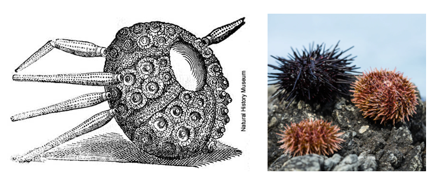
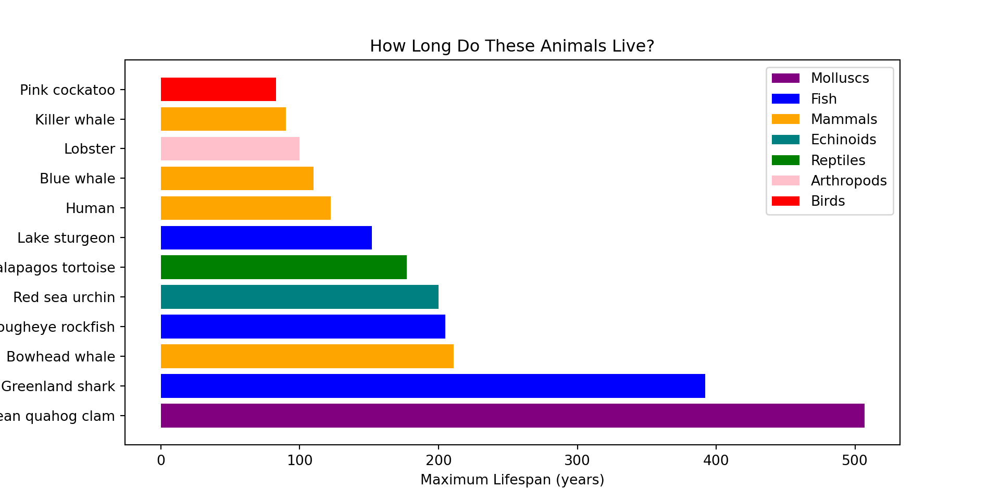

This section is entirely optional and you should only attempt it if you have completed all the coding changes on the previous page.
When we first looked at our dataset at the start it had columns containing extra information. One column of interest is “type”, which lets us know what type of animal they are (mammal, reptile, etc). Let’s manually inspect what type of animal the longest-lived animals are…
Type Common name Maximum longevity (yrs)
0 Molluscs Ocean quahog clam 507.0
1 Fish Greenland shark 392.0
2 Mammals Bowhead whale 211.0
3 Fish Rougheye rockfish 205.0
4 Echinoids Red sea urchin 200.0
5 Reptiles Galapagos tortoise 177.0
6 Fish Lake sturgeon 152.0
7 Mammals Human 122.5
8 Mammals Blue whale 110.0
9 Arthropods Lobster 100.0
10 Mammals Killer whale 90.0
11 Birds Pink cockatoo 83.0
Are there any of these you haven’t heard of before?
For example, echinoids are animals that have a spikey hard shell. Echinoids evolved about 450 million years ago, which is about 220 million years before first dinosaurs appeared! Today we would commonly think of them as ‘sea urchins’ but there are plenty of fossils of ancient echinoids. Below is an artist’s rendition of one vs some red and black sea urchins.

It would be useful to colour our graph by the different animal types. This would give our colours more meaning and also allow us to see if there are any patterns in the data. First, we will store all the unique types of animals in a new variable called ‘types’. We can print ‘types’ to see what this includes.
Code
types = oldest_animals['Type']print(types)
0 Molluscs
1 Fish
2 Mammals
3 Fish
4 Echinoids
5 Reptiles
6 Fish
7 Mammals
8 Mammals
9 Arthropods
10 Mammals
11 Birds
Name: Type, dtype: object
Now we are going to create a colour map for the different types of animals.
This code is a little more complex so don’t try to understand all of it. To summarise, we first manually create a colour map for our different types of animals. Then we create a ‘list’, which is a type of information Python can work with to set the colours.
Code
# Pick a color for each type of animalcolor_map = {'Molluscs': 'purple','Fish': 'blue','Mammals': 'orange','Echinoids': 'teal','Reptiles': 'green','Arthropods': 'pink','Birds': 'red'}# Create a list of colors based on each animal's typebar_colors = [color_map.get(t, 'gray') for t in types]
We can then use our colour map in our plotting code. This includes an aditional step where we manually add a legend too so we can see which colour corresponds to which type of animal. (Note, we have given a graph an alternative/more interesting title this time.)
Code
# Plotplt.figure(figsize=(10, 5))plt.barh(oldest_animals["Common name"], oldest_animals["Maximum longevity (yrs)"], color=bar_colors)plt.xlabel("Maximum Lifespan (years)")plt.ylabel("Animal")plt.title("How Long Do These Animals Live?")# Add a legend manuallylegend_labels = {v: k for k, v in color_map.items()}for color in legend_labels: plt.bar(0, 0, color=color, label=legend_labels[color]) # invisible bars for legendplt.legend()# Show the plotplt.show()
From this, we can see that many of the most long-lived animals in our dataset are mammals, in particular whales and humans! The longest-lived animal is a mollusc, but there is only one of them.
The full code to generate the graph is below:
Code
types = oldest_animals['Type']# Pick a color for each type of animalcolor_map = {'Molluscs': 'purple','Fish': 'blue','Mammals': 'orange','Echinoids': 'teal','Reptiles': 'green','Arthropods': 'pink','Birds': 'red'}# Create a list of colors based on each animal's typebar_colors = [color_map.get(t, 'gray') for t in types]# Plotplt.figure(figsize=(10, 5))plt.barh(oldest_animals["Common name"], oldest_animals["Maximum longevity (yrs)"], color=bar_colors)plt.xlabel("Maximum Lifespan (years)")plt.ylabel("Animal")plt.title("How Long Do These Animals Live?")# Add a legend manuallylegend_labels = {v: k for k, v in color_map.items()}for color in legend_labels: plt.bar(0, 0, color=color, label=legend_labels[color]) # invisible bars for legendplt.legend()# Show the plotplt.show()

Challenges
Using the above code, can you modify the colour map and assign your own colours to the types of animals?
Can you repeat the same steps as above to colour code the data for the shortest-lived animals? To help you we have provided some sample code below that you can modify.
Code
# Challenge 9 - check what types of animals there aretypes = shortest_lived_animals['Type']print(types)# 5 unique types of animal: Arthropods, Birds, Fish, Amphibians, Mammals
Code
# Challenge 9 - create the colour map and graphcolor_map = {'_____': '_____', # ← Enter types and colours in these blank spaces'_____': '_____','_____': '_____','_____': '_____','_____': '_____'}# Create a list of colors based on each animal's typebar_colors = [color_map.get(t, 'gray') for t in types]# Plotplt.figure(figsize=(10, 5))plt.barh(shortest_lived_animals["Common name"], shortest_lived_animals["Maximum longevity (yrs)"], color=bar_colors)plt.xlabel("Maximum Lifespan (years)")plt.ylabel("Animal")plt.title("How Long Do These Animals Live?")# Add a legend manuallylegend_labels = {v: k for k, v in color_map.items()}for color in legend_labels: plt.bar(0, 0, color=color, label=legend_labels[color]) # invisible bars for legendplt.legend()# Show the plotplt.show()
If you got this far then well done, that concludes all of our activities! If you enjoyed learning about animal ageing and want to browse the real website this data came from then check out AnAge.